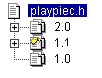

A revision is an instance of a versioned file that can be re-created. When you check out a revision, Serena ChangeMan Version Manager creates a workfile containing the revision in the workfile location of the versioned file. When you check in a workfile, the changes made to the workfile are stored as a revision in an archive.
When you add a workfile for the first time, it is stored in an archive as the initial revision of the versioned file. For example, the versioned file "playpiec.h" below has three revisions: 1.0, 1.1, and 2.0. The first revision, 1.0, is the original copy of the workfile.

Revisions are physically stored in archives. Each versioned file is associated with a single archive.
| About Versioned Files | About Archives |